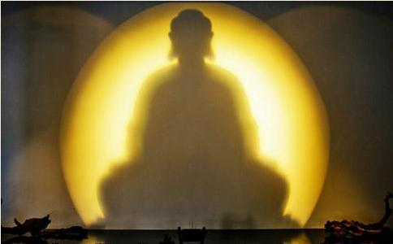

世上有没有三百岁的老和尚，末学不得而知。此处所说三百岁老和尚是指年龄总数接近三百岁的三位老和尚。其中两位年逾百岁，一位九十岁。
“慈悲
开示慈悲念佛的是时年一百零二岁的中原高僧上印下法老和尚，他一生充满奇异经历，可能是大陆目前绝无仅有的解放后包括文革十年浩劫期间也未曾
结果当家师成了司仪，在大殿上，当他宣布恩师登座开示时老和尚缓慢而又稳健地上座。时间不长，只讲了约摸五分钟等。我等原以为饱经沧桑的老僧会有什么奇妙开示，不料他却第一句话就说。
“作为
“慈悲是我们出家人的本份，念佛求生是最终归宿……”如此平淡的话，人人都会讲，而今出自一位阅尽世出
想起了
这是出家前的经历。
末学与一
他当时肺心病复发，早已不再见客了。末学那天到时天已很晚，老人家已止静。次日刚用过早斋，天还没大亮，其侍者即通知末学到方丈室拜见和尚。
老和尚略带倦容，言谈中间或有轻微咳嗽，一气讲了大约半个小时，没别的话题，只讲一件事：持戒念佛。
虽然只有半个小时，途中却有五、六次被侍者打断。侍者说，医生说了师父不能多讲话，只能讲几分钟。每次都是俯身凑近和尚耳边，示意他不能再讲了。老和尚一边微笑着点头称是，一边却又讲开了。我等二人既觉着过意不去，又希望他老人家多多开示。
许多人都知道老和尚的传奇故事。解放前曾做过国民政府县长，晚年以居士身份在成都担任四川佛学院教务长。在七十多岁高龄时，突然被乐至报国寺老方丈，一百零六岁的离欲上人几道加急电报催去。人一赶到寺庙，老人却已圆寂，按老人遗愿，当即在遗体前即为昌臻剃度。刚一剃度的昌臻法师也同样按照老人生前吩咐当即继任住持。此等离奇事例可能也是绝无仅有的吧。法师继承离欲上人遗志，大兴
拜访昌臻老和尚之后月余，又与两位居士上了
同是四川境内，同是报国寺，一在乐至，一在峨眉，说起两位老人，其间还有一段广为流传的佳话。
几年前，昌臻法师正在乐至报国寺为弟子讲法，年近百岁的通永老和尚不期而至，进得讲堂，步履艰难的老和尚即向昌臻法师行跪拜礼！前者虽然年轻十来岁，辈份却长一辈，通永老和尚向师叔行大礼，本在情理之中。不想昌臻法师执意不受，随即也对面跪下作还礼——同志们请设想当时情景：一个年近九十，一个年近百岁，两位白胡子光头和尚就这样面对面跪在讲台上，谁也不肯先起身……台下数十名法师居士一时目瞪口呆望着两位可爱的老人，一时传为佳话。
再说这位通老，末学过去知之甚少，但也从一些资料上有所耳闻。其中最著名的就是以其百岁之躯，日诵佛号十万声！这是令许多身强力壮的
老和尚当时在侍子搀护下来到院中，坐于一藤椅上，左手握一
末学上前请求开示……话末说完——老和尚或是经历此类事太多了，不容末学问话讲完。扬起拧着念珠的左手：
“念佛！念佛！”仅止四个字！
这就是棒喝！
禅门里有棒喝，而净土门内，这位百岁老人的“念佛！念佛！”更是一句震彻天地的棒喝！！
末学当时的心态，就是震撼！
三位老人，三位饱经沧桑的出家人，他们集一生智慧的结晶都没有离开“念佛！”
“慈悲念佛”，“持戒念佛”
更为精彩的就是
“念佛！念佛！”
坐在藤椅上，扬起左手的那个神态，那个毫无表情的眼神，那个一刀截断行人所有烦恼
专念南无阿弥陀佛一佛，十方诸佛自然护念。护念即是守护忆念，令其安稳，无诸障难。
故知：念阿弥陀佛，即是念十方诸佛；生极乐净土，即是生十方净土；能以此利，即能普利一切。不必改口另外称念十方诸佛名号。
专念南无阿弥陀佛一佛，观音势至，自然相随；并有其他大
故知：但念弥陀，即已通念诸大菩萨，观音势至，
专念南无阿弥陀佛一佛，即是获得大利，具足无上功德，当然超胜任何
其有得闻彼佛名号 欢喜踊跃 乃至一念
当知此人为得大利 则是具足 无上功德。
故知：念佛即是无上大利功德，则一切咒语即诸行门，皆是有上小利功德。故有智之人，当舍有上小利之余行，而专念无上大利之六字洪名。
又，《佛说阿弥陀佛根本秘密神咒经》言： 阿弥陀佛名号，具足无量无边、不可思议、甚深秘密、
是故，彼佛名号，即是无上真实至极大乘之法，即是为无上殊胜清静了意妙行，即是无上最胜微妙陀罗尼。而说偈曰：
阿字十方三世佛
弥字一切诸菩萨
陀字八万诸圣教
三字之中是具足
故知：一句弥陀是佛王、法王、咒王、功德之王。专念南无阿弥陀佛一佛，即是总持总念诸佛、诸菩萨、诸经咒、诸行门。所谓八万四千法门，六字全收。亦谓该罗八教，圆摄五宗。既得临终往生净土，亦或现世身心安乐。